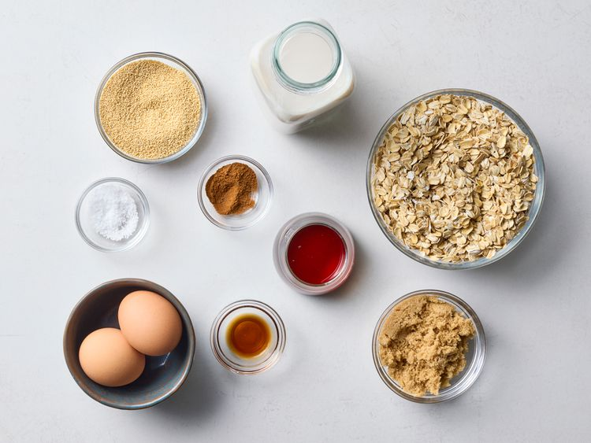
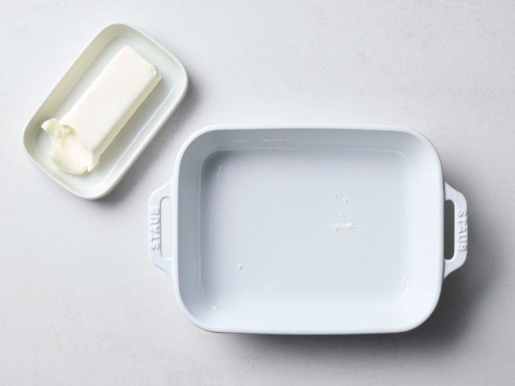
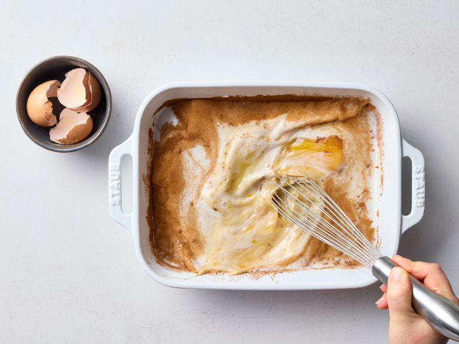
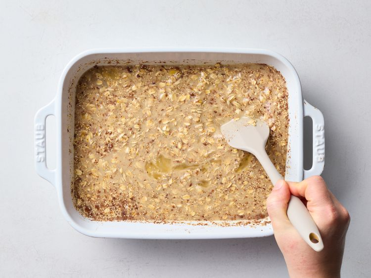
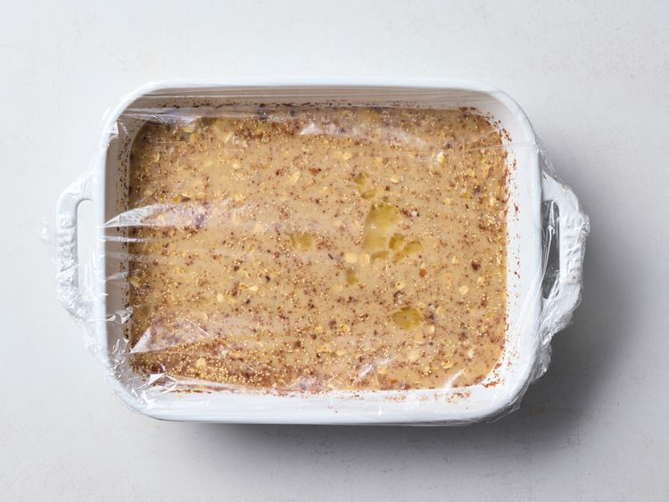
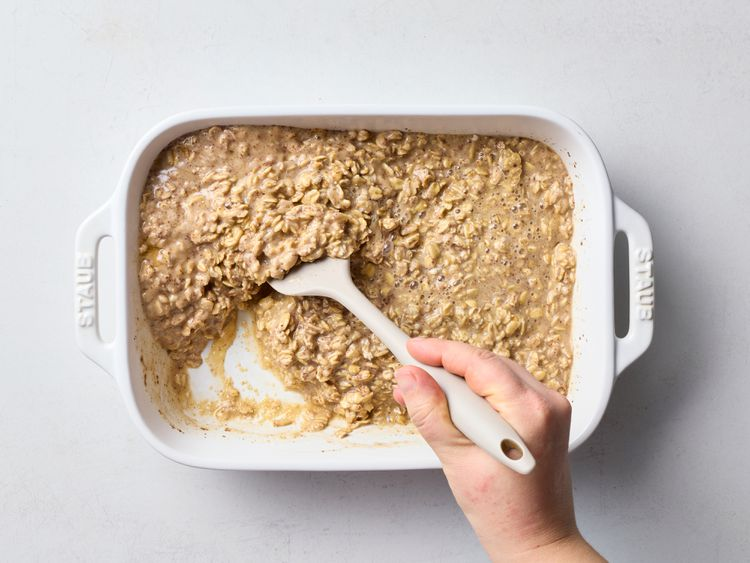
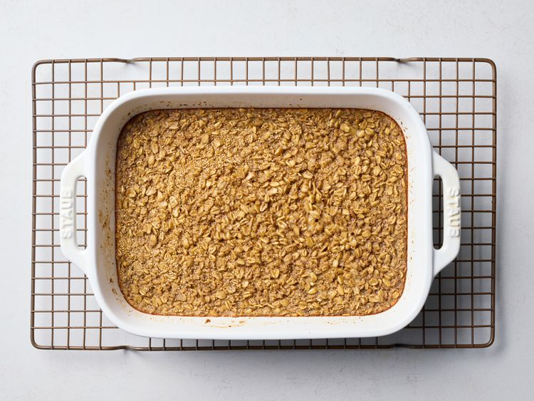
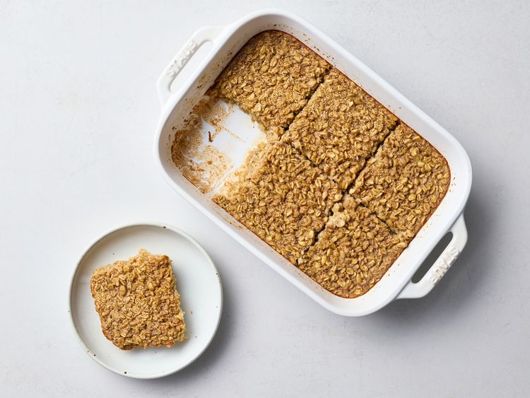

Home
Overnight Baked Oatmeal

Description
This overnight baked oatmeal has a tender, yet chewy texture, fun flavor combination ideas, and just the right amount of sweetness and spice.
Ingredients
- 2 large eggs
- 2 cups milk or unsweetened plant milk of your choice
- 1/4 cup maple syrup
- 1/4 cup packed brown sugar
- 1 teaspoon vanilla extract
- 1 teaspoon ground cinnamon
- 1/2 teaspoon salt
- 2 cups regular rolled oats (not quick cooking)
- 1/3 cup dry amaranth, buckwheat groats or quinoa (optional)
Steps
- Gather all ingredients.

- Grease a 2-quart rectangular baking dish.

- Whisk eggs, milk, maple syrup, brown sugar, vanilla, cinnamon, and salt together in the prepared dish.

- Stir in oats and amaranth. If desired, stir in flavor variation mix-ins (see below).

- Cover and chill at least overnight or up to 3 days.

- Preheat the oven to 350 degrees F (180 degrees C). Uncover and stir to re-incorporate all of the ingredients.

- Bake, uncovered, until golden brown and the center is set, 45 to 55 minutes.

- Let stand 10 minutes before serving. Serve warm.
